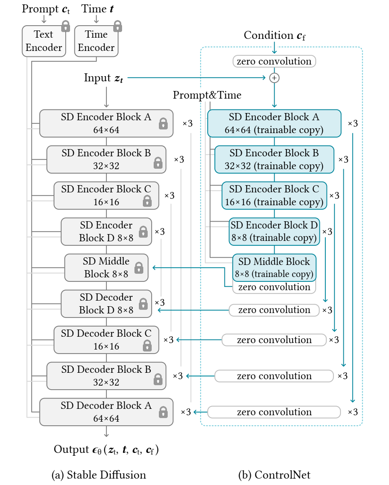
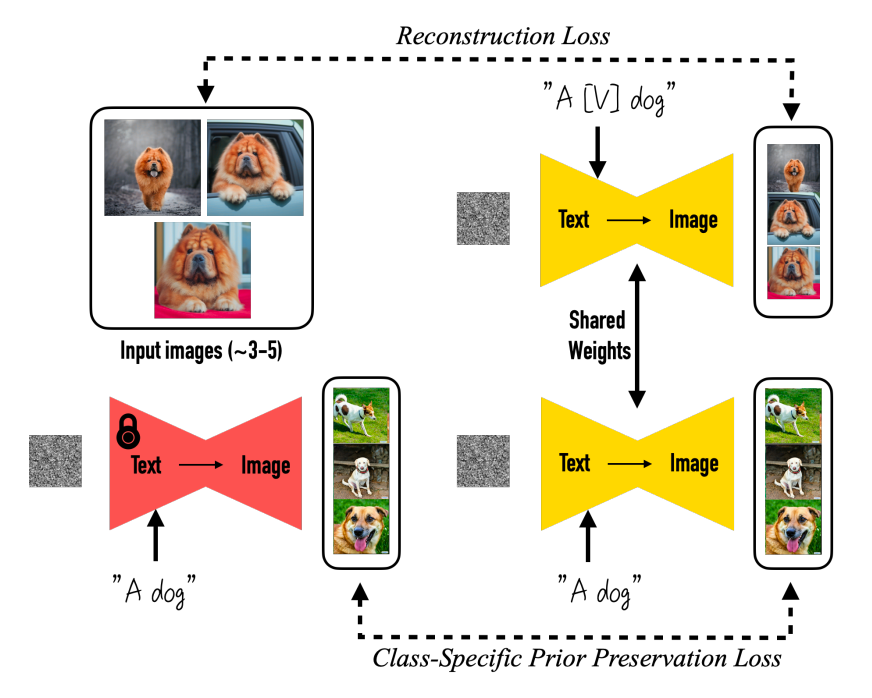

ControlNet与DreamBooth：生成模型的精细控制与主体保持
ControlNet基本原理
原版论文：Adding Conditional Control to Text-to-Image Diffusion Models
GitHub：https://github.com/lllyasviel/ControlNet

ControlNet的目标
通过引入条件信息实现精细控制，比如canny edge图、深度图、segmentation map图等，同时保留Stable Diffusion原版模型的生成能力。
实现方法
先fix一个训练好的SD模型，然后将SD模型的encoder和middle部分的模块复制出来并打开训练，将控制图通过这些模块得到不同的控制特征图，然后利用zero convolution将这些特征图与fix的SD模型结合，最终实现带控制的生成。
关键概念：zero convolution
所谓zero convolution，实际上是一个
这样做还有一个优点，即提高训练效率。可以看出，ControlNet实际上只训练了约一半的U-net，对于上采样部分直接用fix的预训练过的SD的权重，因此计算量增量比较低（相比于直接从头训练来说）。
DreamBooth原理
DreamBooth: Fine Tuning Text-to-Image Diffusion Models for Subject-Driven Generation
主要任务目标
实现主体驱动（即生成的主体可控的）T2I 图文生成。具体来讲，就是通过输入若干张带有某主体（比如某个猫狗宠物、某个花瓶、某个书包等等）的图像，对已有的图文生成模型进行微调，使其可以获得对主体进行文本控制生成的效果。相比与类别引导（比如“dog"）生成的语义符合大类的要求的图像，DreamBooth的任务更加侧重于对特称的某个事物进行保主体的生成，即不但需要得到图中的“一只狗”，而且需要是“这只狗”。
核心方案
将输入图像中的特定主体与一个特殊的标识符（unique identifier）绑定，然后用带有这个标识符的文本对T2I模型进行生成。这个标识符是通过再vocabulary中找到rare token，并将其invert到文本空间得到的。这里作者讨论了几种不同的策略，最直接的，比如如果我们想要生成某一个特定的狗，那么文本应该直接写成"a special/unique dog with ..."，但是这个问题在于，像special这种词再训练中可能已经获取到的很多语义信息，这样的训练会让这些词先与原版的含义解离，然后再绑定到我们的主体上，但同时这也让模型（语言模型和扩散模型）的先验变弱；另一种思路就是找一个随机的文本，比如“xxy5syt00”这种，这个方法的问题在于，因为文本时无意义的，因此可能在tokenize的时候被切分成字母，而字母也是有强先验的。考虑到这些因素，在实验中，作者采用了另一种方法，那就是上面提到的在vocab中找本来就是不常见的token，然后将其绑定到当前主体上。这样即不会丢失已有的强语义先验，同时也可以加入新的主体的表征。
对于T2I预训练模型的finetune会带来两个主要的问题，分别是语言漂移（language drift）和多样性降低（reduced output diversity）。
- language drift：对于一个在大规模语言数据集上训练好的模型，然后再到specific task上去微调，结果会使得模型逐渐丧失掉语法和语义的能力。
- reduced output diversity：对于few shot的finetune来说，模型逐渐靠近目标小数据集，可以生成符合目标主体的图像，但是同时也有一定的风险可能使得生成的结果再视角、姿态上变得多样性很少。
为了解决上述问题，再训练过程中，DreamBooth还加入了一个约束项，即class-specific prior preservation loss，如图：

比如，对于主体的大类别dog来说，一方面我们训练“A [V] dog”去拟合few shot数据集，同时另一方面强制要求"A dog"（没有特殊标识符的狗）和之前的预测结果一致（左侧锁定的SD模型）。对比实验发现，如果不加入这个约束只用上面的reconstruction loss的话，生成的所有狗都是和few shot输入数据类似的狗，这就失去了多样性。
DreamBooth的实验结果示例，可以看出还是能够较好地preserve给定的主体，同时接受文本的引导。